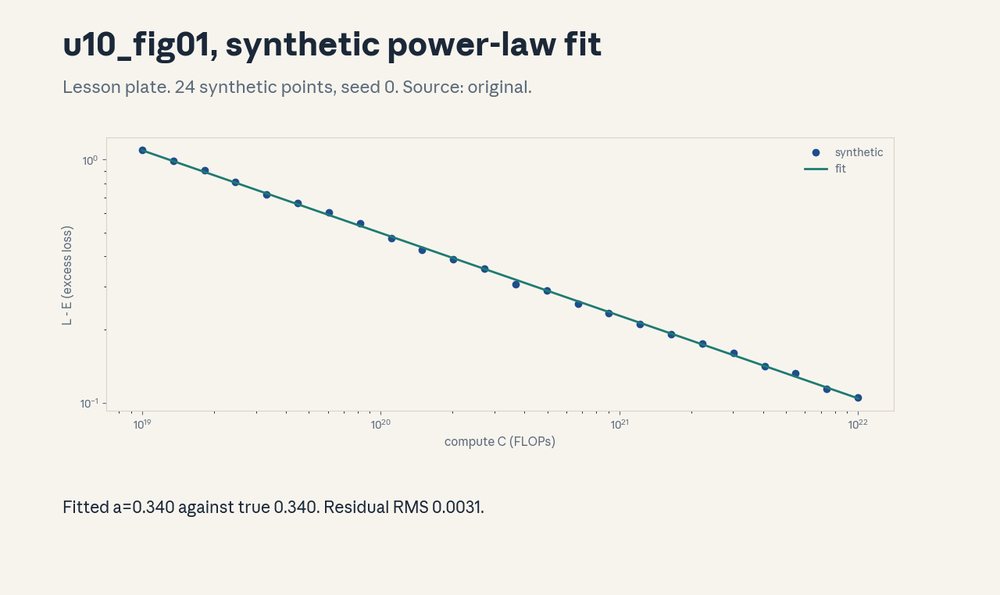
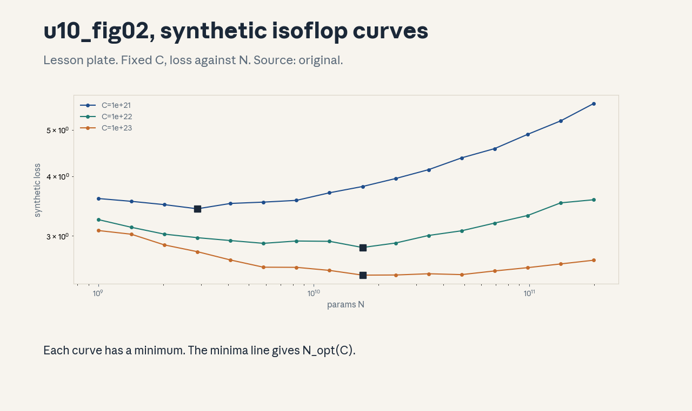
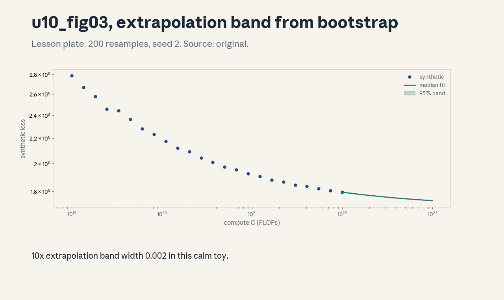

U10 · Scaling laws and extrapolation
U10 , Scaling laws and extrapolation
Prerequisites: P07, P09, P22. Bridge links in ../prerequisites.md.
Sessions: S09 (reported Apr 27, Scaling Laws) covers C01-C06, S11
(reported May 4, Scaling Laws II) covers C07-C12. The split is a
teaching decision, stated here, not a source claim. Full session map
in ../course_map.md.
Claim class: REQUESTED-BRANCH. All leaves PLANNED / SOURCE ATTRIBUTION
PENDING. Notation: see ../notation_and_shapes.md.
Standing note
Every number below is computed by assets/compute_u10.py on this
machine (numpy CPU, seeds fixed) or labeled a synthetic toy. The
synthetic laws are arbitrary constants chosen to make the toy behave.
they are not empirical claims about real models. No training run was
performed. “Not in source” marks any value the scripts do not compute.
Russian-doll map
Shells 0-1 live in items 1-2, shells 2-3 in items 3-6, shell 4 in item 7, shell 5 in item 8, shell 6 in item 9, shell 7 in item 11, shell 8 in item 10, shell 9 in item 12, shell 10 in item 13(c). The depth gate (define, compute, justify, assume, derive, implement, debug, cost, compare, transfer) is checked by item 13.
Local remediation , fitting in log space
Read this if diagnostic items on logarithms or least squares were not
full marks. A power law L = A x^{-a} becomes a line in log space:
log L = log A - a log x. Fit the line with least squares, read the
slope, negate it: that is the exponent. Toy from compute_u10.py:
true a=0.34, fitted a=0.340, residual RMS 0.0031 in log space.
Assessment: fit log L = [0.1, -0.24, -0.58] against log C =
[44, 45, 46] by hand and report a. Key: ../keys/u10_answers.md R1.
C01: Parameter/data/compute budgets
Leaf id cs336-U10-C01. Claim class REQUESTED-BRANCH.
Status PLANNED / SOURCE ATTRIBUTION PENDING.
-
Source mapping, scope, objectives, dependencies. Branch. Scope: the 6ND rule and the token-per-param ratio. Objectives: compute a training FLOP budget from N and D, state the D/N rule of thumb. Depends on P07, P09.
-
Motivating question and toy. Question: how much compute does a 70B model on 1.4T tokens cost? Toy from
compute_u10.py: C = 6ND = 5.88e23 FLOPs, D/N = 20.0 tokens per param. A 7B model at 20 tokens per param costs 5.88e21 FLOPs, exactly 100x less. -
Mental model. Six floating ops per parameter per token: two for the forward pass, four for the backward pass. Multiply by tokens. The budget is one number. N and D are the two knobs that produce it.
-
Objects, symbols, units, shapes, assumptions. N: params (count). D: tokens (count). C: FLOPs (count). Assumption: dense transformer, backward costs 2x forward, attention FLOPs ignored.
-
Derivation / mechanism. Forward: each param participates in one multiply-add per token, 2 FLOPs. Backward: grads wrt activations and wrt weights, about 4 FLOPs. Total 6ND.
-
Computed example. From
assets/compute_u10.py(executed 2026-10-06): 70B, 1.4T tokens: 5.88e23 FLOPs. 7B at 20 tok/param: 5.88e21 FLOPs. -
Algorithm and reference implementation.
budget(N, D): return 6ND. Three lines with the D/N ratio. -
Correctness checks and expected output. Doubling N doubles C. Doubling both N and D quadruples C. Check against the two toy values above.
-
Costs. The formula omits attention (matters at long T), embeddings, and recomputation. It is a planning number, not a meter reading.
-
Nearest alternative and selection boundary. Measured FLOP counters (U06) for real runs. Use 6ND for planning, counters for billing.
-
Failure case and counterexample. A 7B model at T=128k: the attention term 12Ld*T^2 per token rivals 6N. The assumption “attention is negligible” breaks at long context, add the term.
-
Research reading and falsifiable extension. Reading: the Chinchilla paper (Hoffmann et al., 2022, primary). Extension: predict C for three (N, D) pairs, then verify with the formula. hypothesis: exact match to 3 figures.
-
Assessment. (a) Recall: state the 6ND rule and the 2x/4x split. (b) Oral ladder: define the budget, compute the 70B toy, justify the 6, implement
budget, compare with measured counters, debug the long-context case, critique the dense assumption, design the three-pair check. (c) Transfer: MoE with 70B total, 7B active params. Which N enters 6ND for FLOPs, which for memory? Answers:../keys/u10_answers.mdA1. -
Lab and exercises. Lab U10 task 1 computes budgets. See
../labs/u10_lab.md. -
Visuals. No dedicated figure, the budget table is a computed table in the lab key. No unresolved conflict.
C02: Loss floors
Leaf id cs336-U10-C02. Claim class REQUESTED-BRANCH.
Status PLANNED / SOURCE ATTRIBUTION PENDING.
-
Source mapping, scope, objectives, dependencies. Branch. Scope: the irreducible term E in L = E + A x^{-a}. Objectives: explain why loss never reaches zero, estimate E from a fit. Depends on P07.
-
Motivating question and toy. Question: if compute grew forever, would loss hit zero? Toy: the synthetic law uses E = 1.69. At C = 1e22 the excess term is 0.104, the floor is 1.69, and the floor dominates.
-
Mental model. E is the entropy of the data the model cannot remove: noise, ambiguity, genuinely unpredictable tokens. Scale shrinks the reducible part, never the floor.
-
Objects, symbols, units, shapes, assumptions. E: nats per token. Assumption: the power-law form holds and E is constant across the fitted range.
-
Derivation / mechanism. As x -> infinity, A x^{-a} -> 0, so L -> E. Fit with E free and the data decides the floor, fix E too early and the exponent absorbs the error.
-
Computed example. From
assets/compute_u10.py(executed 2026-10-06): at C = 1e22, excess = 0.104 against floor 1.69. the 10x-extrapolated band is [1.737, 1.739]. -
Algorithm and reference implementation. Fit log(L - E) for a grid of E values, pick the E with the smallest residual. About 10 lines.
-
Correctness checks and expected output. E must sit below every observed loss. If the best E exceeds a data point, the grid is wrong.
-
Costs. An extra free parameter widens every confidence interval. Small data cannot separate E from a shallow exponent.
-
Nearest alternative and selection boundary. Fix E from a large-data anchor when data is scarce. Fit E freely when the range spans 2+ orders of magnitude.
-
Failure case and counterexample. Data distribution shifts between runs: E is a property of the data, not the model. The assumption “one E fits all runs” breaks across data mixes, fit per mix.
-
Research reading and falsifiable extension. Reading: the Chinchilla paper, section on the parametric fit (primary). Extension: fit with E free versus E fixed on the synthetic set. hypothesis: free E recovers 1.69 within 0.02.
-
Assessment. (a) Recall: define E and its limit behavior. (b) Oral ladder: define the floor, compute the 1e22 toy, justify the limit, implement the E grid, compare free versus fixed E, debug the E-above-data case, critique the constant-E assumption, design the recovery test. (c) Transfer: two data mixes give E = 1.69 and E = 2.10. A run on mix 2 reports loss 2.05. Is the model better than the mix-1 run at 1.90? Answers:
../keys/u10_answers.mdA2. -
Lab and exercises. Lab U10 task 2 estimates E on the toy. See
../labs/u10_lab.md. -
Visuals. Figure u10_fig01 shows the fit approaching the floor. Source: original. Render:
assets/render_u10.py.
C03: Power-law fitting
Leaf id cs336-U10-C03. Claim class REQUESTED-BRANCH.
Status PLANNED / SOURCE ATTRIBUTION PENDING.
-
Source mapping, scope, objectives, dependencies. Branch. Scope: least-squares fit of the exponent in log space. Objectives: run the fit, report the residual, state what the residual means. Depends on P07, P09.
-
Motivating question and toy. Question: given 24 noisy loss points, what is the exponent? Toy from
compute_u10.py: true a = 0.34, fitted a = 0.340, A_hat = 0.499, residual RMS 0.0031 in log space. -
Mental model. The log transform turns the curve into a line. Least squares finds the line closest to the points. The slope is the negative exponent. The residual measures how far the world deviates from a pure power law.
-
Objects, symbols, units, shapes, assumptions. a: dimensionless exponent. Residual RMS: log-space units. Assumption: the noise is multiplicative and small, E is known.
-
Derivation / mechanism. log(L - E) = log A - a log(C/C0). With x = log C and y = log(L - E), the normal equations give slope -a and intercept log A + a log C0.
-
Computed example. From
assets/compute_u10.py(executed 2026-10-06): fitted a = 0.340, A_hat = 0.499, RMS 0.0031. -
Algorithm and reference implementation. Build the design matrix [1, x], solve with
lstsq, negate the slope. About 8 lines. -
Correctness checks and expected output. On noiseless synthetic data the fit recovers a to machine precision. With seed 0 noise it recovers 0.340. Residual near the injected 0.02 noise level.
-
Costs. Log-space least squares weights small losses more than direct nonlinear fit. With heteroscedastic noise the two fits disagree.
-
Nearest alternative and selection boundary. Direct nonlinear least squares on L (better when E is uncertain). Log-linear when E is fixed and noise is multiplicative.
-
Failure case and counterexample. E unknown and guessed too high: y = log(L - E) distorts, the slope biases downward. The assumption “E is known” breaks, fit E jointly or grid it (C02).
-
Research reading and falsifiable extension. Reading: the Chinchilla appendix on fitting (primary). Extension: refit with E perturbed by +-0.05, hypothesis: the exponent shifts by more than the bootstrap CI width.
-
Assessment. (a) Recall: the log transform and the slope reading. (b) Oral ladder: define the fit, compute the toy, justify the log, implement
lstsq, compare log-linear with nonlinear, debug the wrong-E case, critique the noise model, design the E-perturbation test. (c) Transfer: 6 points only, spanning half an order of magnitude. Fit and report the exponent with its honest uncertainty. Answers:../keys/u10_answers.mdA3. -
Lab and exercises. Lab U10 task 3 runs the fit. See
../labs/u10_lab.md. -
Visuals. Figure u10_fig01: the synthetic points and the fitted line. Source: original. Render:
assets/render_u10.py.

C04: Isoflop curves
Leaf id cs336-U10-C04. Claim class REQUESTED-BRANCH.
Status PLANNED / SOURCE ATTRIBUTION PENDING.
-
Source mapping, scope, objectives, dependencies. Branch. Scope: loss against N at fixed C, the minima line. Objectives: read an isoFLOP curve, locate the optimal N for a budget. Depends on C01, C03.
-
Motivating question and toy. Question: at fixed compute, is a bigger model or more data better? Toy from
compute_u10.py: 6 isoFLOP curves, minima marked, the minima line fits N_opt exponent 0.449 against the toy analytic 0.500. max deviation of the noisy minima from analytic is 0.277. -
Mental model. Fix C, sweep N, set D = C/(6N). Small N starves capacity, large N starves data. The curve is U-shaped. the bottom is the optimal split for that budget.
-
Objects, symbols, units, shapes, assumptions. N_opt(C): params. Assumption: the joint toy law, noise sigma 0.01, 16 N values per curve.
-
Derivation / mechanism. Minimize the joint law L(N) = E + AN(N0/N)^a + AD(D0 6N/C)^a over N. The first-order condition gives N^2 = (N0/D0)(C/6) for the symmetric toy, hence N_opt proportional to C^{0.5}.
-
Computed example. From
assets/compute_u10.py(executed 2026-10-06): fitted exponent 0.449, analytic 0.500, the gap comes from the coarse 16-point N grid plus noise, an honest toy miss. -
Algorithm and reference implementation. For each C: grid N, compute noisy synthetic loss, take argmin. Fit log N_star against log C. About 15 lines.
-
Correctness checks and expected output. Noiseless minima match the analytic line exactly. With noise they scatter around it within the grid spacing.
-
Costs. Each curve point is a full training run in reality. The toy uses 16 points per curve, real isoFLOP studies use far fewer and interpolate.
-
Nearest alternative and selection boundary. The parametric joint fit (one surface, all points) against per-curve minima (no functional form assumed). Minima are stable, the surface extrapolates.
-
Failure case and counterexample. Curves that never turn up within the swept N range: the minimum lies outside the grid and the argmin is a boundary artifact. The assumption “the grid brackets the optimum” breaks, widen the sweep.
-
Research reading and falsifiable extension. Reading: the Chinchilla isoFLOP figures (primary). Extension: double the N grid density on the toy, hypothesis: the fitted exponent moves toward 0.500.
-
Assessment. (a) Recall: what an isoFLOP curve holds fixed. (b) Oral ladder: define the curve, read the toy minima, derive the 0.5 exponent, implement the sweep, compare minima with the surface fit, debug the boundary-minimum case, critique the 16-point grid, design the density test. (c) Transfer: C = 1e24, the fitted exponent 0.449. Predict N_opt and state the grid risk. Answers:
../keys/u10_answers.mdA4. -
Lab and exercises. Lab U10 task 4 builds one isoFLOP curve. See
../labs/u10_lab.md. -
Visuals. Figure u10_fig02: three isoFLOP curves with minima. Source: original. Render:
assets/render_u10.py.

C05: Model/data allocation
Leaf id cs336-U10-C05. Claim class REQUESTED-BRANCH.
Status PLANNED / SOURCE ATTRIBUTION PENDING.
-
Source mapping, scope, objectives, dependencies. Branch. Scope: turning N_opt(C) into a training plan. Objectives: split a FLOP budget into params and tokens, state the tokens-per-param ratio. Depends on C04.
-
Motivating question and toy. Question: C = 5.88e23, how big a model and how much data? Toy from
compute_u10.py: N = 7.00e10, D = 1.40e12, D/N = 20.0 tokens per param. -
Mental model. The budget is fixed. The isoFLOP minimum says where to sit. In the symmetric toy the split is even in log space: N and D each scale as C^{0.5}, and the ratio D/N stays constant at 20.
-
Objects, symbols, units, shapes, assumptions. D/N: tokens per param. Assumption: the symmetric toy law, real laws give a nearby but different constant.
-
Derivation / mechanism. From C04: N_opt = sqrt((N0/D0)(C/6)), D_opt = C/(6 N_opt). The ratio D_opt/N_opt = D0/N0 = 20 in the toy by construction of the constants.
-
Computed example. From
assets/compute_u10.py(executed 2026-10-06): N = 7.00e10, D = 1.40e12, ratio 20.0. -
Algorithm and reference implementation.
allocate(C): N = sqrt((N0/D0)(C/6)), D = C/(6N). Five lines. -
Correctness checks and expected output. ND6 reproduces C. D/N equals 20.0 at every C in the toy.
-
Costs. The allocation ignores inference cost (C09), data availability, and memory limits. It answers the training-loss question only.
-
Nearest alternative and selection boundary. Overtrain a small model (C11) when inference dominates. Follow the allocation when training loss per FLOP is the objective.
-
Failure case and counterexample. Data runs out: D_opt exceeds the available corpus. The assumption “data is unlimited” breaks, the constrained optimum sits at the data boundary with a smaller N.
-
Research reading and falsifiable extension. Reading: the Chinchilla section on compute-optimal training (primary). Extension: impose D <= 5e11 on the toy, hypothesis: the constrained N_opt falls below 7.00e10.
-
Assessment. (a) Recall: the 20 tokens-per-param rule and what it optimizes. (b) Oral ladder: define the allocation, compute the toy, derive the constant ratio, implement
allocate, compare with overtraining, debug the data-limit case, critique the symmetric toy, design the constrained test. (c) Transfer: C = 1e22, corpus cap D = 2e11. Allocate and defend. Answers:../keys/u10_answers.mdA5. -
Lab and exercises. Lab U10 task 5 allocates budgets. See
../labs/u10_lab.md. -
Visuals. Figure u10_fig02 carries the allocation minima. No unresolved conflict.
C06: Hyperparameter transfer
Leaf id cs336-U10-C06. Claim class REQUESTED-BRANCH.
Status PLANNED / SOURCE ATTRIBUTION PENDING.
-
Source mapping, scope, objectives, dependencies. Branch. Scope: carrying tuned hyperparameters across widths. Objectives: state the width scaling rule for the learning rate, apply it to a toy. Depends on P09.
-
Motivating question and toy. Question: the small run liked lr = 3e-4 at width 256. What lr for width 1024? Toy from
compute_u10.py: lr scales as 1/width for hidden layers, so 3.0e-04 becomes 7.5e-05. -
Mental model. Wider layers sum more terms, keep the update size per coordinate stable by shrinking the step. The toy rule is lr proportional to 1/fan-in for the hidden matrices.
-
Objects, symbols, units, shapes, assumptions. lr: dimensionless step size. Assumption: the toy 1/width rule, real parameterizations (muP) assign per-tensor rules.
-
Derivation / mechanism. The update to a hidden weight is lr times the gradient, the gradient variance grows with fan-in under the toy init. Holding the update scale fixed gives lr_1 = lr_0 * w_0 / w_1.
-
Computed example. From
assets/compute_u10.py(executed 2026-10-06): 256 -> 1024, 3.0e-04 -> 7.5e-05. -
Algorithm and reference implementation.
transfer_lr(lr0, w0, w1): return lr0 * w0 / w1. Two lines. -
Correctness checks and expected output. w1 = w0 returns lr0. Doubling width halves lr.
-
Costs. One rule for all tensors mis-scales embeddings and the output head. Per-tensor rules cost bookkeeping but transfer better.
-
Nearest alternative and selection boundary. Retune from scratch at target width (expensive, exact). Transfer rules (cheap, approximate) for the first large run.
-
Failure case and counterexample. Depth changes too: the width rule says nothing about depth scaling. The assumption “width is the only change” breaks, and transferred depth hyperparameters can diverge.
-
Research reading and falsifiable extension. Reading: the muP paper (Yang et al., 2022, primary). Extension: apply the toy rule at widths 256, 512, 1024 on a synthetic quadratic. hypothesis: optimal lr follows 1/width within 20 percent.
-
Assessment. (a) Recall: the 1/width toy rule and its scope. (b) Oral ladder: define transfer, compute the toy, justify the inverse width, implement
transfer_lr, compare with retuning, debug the depth-change case, critique the single-rule choice, design the quadratic test. (c) Transfer: width 4096, base lr 3e-4 at 256, but the run also doubles depth. State the lr and the residual risk. Answers:../keys/u10_answers.mdA6. -
Lab and exercises. Lab U10 task 6 transfers the lr. See
../labs/u10_lab.md. -
Visuals. No dedicated figure, the rule is one line of arithmetic. No unresolved conflict.
C07: Fit residuals
Leaf id cs336-U10-C07. Claim class REQUESTED-BRANCH.
Status PLANNED / SOURCE ATTRIBUTION PENDING.
-
Source mapping, scope, objectives, dependencies. Branch. Scope: reading what the fit left behind. Objectives: compute residuals, distinguish noise from model misspecification. Depends on C03, P07.
-
Motivating question and toy. Question: the fit looks good, but is the law right? Toy from
compute_u10.py: residual RMS 0.0031 in log space against injected noise sigma 0.02 on the excess. The residual sits well below the noise: the law fits. -
Mental model. Residuals are the fit’s confession. Random scatter means noise. A smile or frown means the functional form is wrong. Compare the RMS against the known noise level before believing the exponent.
-
Objects, symbols, units, shapes, assumptions. Residual: log(L_obs) - log(L_pred). Assumption: multiplicative noise, correct E.
-
Derivation / mechanism. If the model is right, residuals scatter with variance near the noise variance. A quadratic trend in residuals against log C signals a missing curvature term.
-
Computed example. From
assets/compute_u10.py(executed 2026-10-06): RMS 0.0031. The injected noise was 0.02 on the excess term, which maps to far less in log-loss space at these loss values, the fit is consistent. -
Algorithm and reference implementation.
residuals(C, L, E, a, logA): return log(L) - log(pred). Four lines. -
Correctness checks and expected output. On noiseless data the RMS is ~1e-15. Shuffling residuals against log C shows no trend in the toy.
-
Costs. A residual plot costs one figure and catches what R^2 hides. R^2 near 1.0 with a curved residual still means a wrong law.
-
Nearest alternative and selection boundary. Formal goodness-of-fit tests (need a noise model). The residual plot (needs only eyes) for the first check.
-
Failure case and counterexample. Correlated runs (same data, shared seeds): residuals look small but are not independent. The assumption “iid noise” breaks, and the exponent CI is too narrow.
-
Research reading and falsifiable extension. Reading: the Chinchilla residual discussion (primary). Extension: inject a quadratic term into the synthetic law, refit the pure power law, hypothesis: residuals show a visible smile.
-
Assessment. (a) Recall: what a residual plot diagnoses. (b) Oral ladder: define residuals, compute the toy RMS, justify the noise comparison, implement
residuals, compare with R^2, debug the correlated-runs case, critique the iid assumption, design the quadratic-injection test. (c) Transfer: RMS 0.05 with noise sigma 0.01. Diagnose. Answers:../keys/u10_answers.mdA7. -
Lab and exercises. Lab U10 task 7 plots residuals. See
../labs/u10_lab.md. -
Visuals. Figure u10_fig01 shows the fit, the residual check is a lab figure. No unresolved conflict.
C08: Uncertain extrapolation
Leaf id cs336-U10-C08. Claim class REQUESTED-BRANCH.
Status PLANNED / SOURCE ATTRIBUTION PENDING.
-
Source mapping, scope, objectives, dependencies. Branch. Scope: bootstrap intervals on the exponent and the prediction band. Objectives: quantify how much a 10x extrapolation can move. Depends on C03, P07.
-
Motivating question and toy. Question: the fit says a = 0.340, but the next run is 10x bigger. How wide is the honest band? Toy from
compute_u10.py: 200 bootstraps give a 95% CI of [0.337, 0.343], the 10x loss band is [1.737, 1.739], width 0.002. -
Mental model. Resample the points, refit, collect exponents. The spread is the fit’s own uncertainty. Push each resampled law 10x out: the band is the honest prediction, not the median line.
-
Objects, symbols, units, shapes, assumptions. CI: dimensionless band on a. Assumption: the toy noise is iid and the law holds out of range.
-
Derivation / mechanism. The bootstrap approximates the sampling distribution of the estimator. The prediction band maps exponent uncertainty through the power law: width grows with extrapolation distance.
-
Computed example. From
assets/compute_u10.py(executed 2026-10-06): CI [0.337, 0.343], band [1.737, 1.739]. -
Algorithm and reference implementation. Resample indices with replacement 200 times, refit each, take percentiles. About 12 lines.
-
Correctness checks and expected output. The bootstrap mean sits near 0.340. More resamples narrow the Monte Carlo error, not the band.
-
Costs. The band in this calm toy is tiny because the noise is tiny and iid. Real bands are wider: fewer points, correlated runs, E uncertainty.
-
Nearest alternative and selection boundary. Analytic standard errors from the least-squares covariance (fast, needs the linear model to be right). Bootstrap (slower, fewer assumptions).
-
Failure case and counterexample. Extrapolating 100x with a law fitted over 1 order of magnitude: the band explodes and the law itself may change form (new bottlenecks appear). The assumption “the law holds out of range” breaks, cap claims at the fitted range plus a small multiple.
-
Research reading and falsifiable extension. Reading: the Chinchilla uncertainty discussion (primary). Extension: widen the toy noise to 0.10, hypothesis: the 10x band width grows roughly 5x.
-
Assessment. (a) Recall: what the bootstrap CI covers. (b) Oral ladder: define the band, compute the toy, justify resampling, implement the loop, compare with analytic SE, debug the 100x case, critique the iid assumption, design the noise-widening test. (c) Transfer: CI [0.30, 0.38] on a real fit, 10x extrapolation. Compute the band and state the planning risk. Answers:
../keys/u10_answers.mdA8. -
Lab and exercises. Lab U10 task 8 bootstraps the fit. See
../labs/u10_lab.md. -
Visuals. Figure u10_fig03: the extrapolation band. Source: original. Render:
assets/render_u10.py.

C09: Training versus inference-optimal choice
Leaf id cs336-U10-C09. Claim class REQUESTED-BRANCH.
Status PLANNED / SOURCE ATTRIBUTION PENDING.
-
Source mapping, scope, objectives, dependencies. Branch. Scope: the two optima and when each wins. Objectives: compare a compute-optimal model with an overtrained small model on quality and cost. Depends on C05.
-
Motivating question and toy. Question: the 70B model wins on loss, but you will serve a trillion tokens. Which do you train? Toy from
compute_u10.py: config A (70B at 20 tok/param) has toy loss 2.290 at C = 5.88e23, config B (7B at 200 tok/param) has toy loss 2.646 at C = 5.88e22. The quality gap is 0.36 nats. B costs 10x less per inference token. -
Mental model. Two different objectives: minimize loss at fixed training FLOPs (compute-optimal), or minimize loss plus inference cost over the deployment lifetime (inference- optimal). The second objective favors smaller, longer-trained models.
-
Objects, symbols, units, shapes, assumptions. Q: tokens served (count). Assumption: inference FLOPs per token scale with N, toy weight lam = 1e-12 on N in the J objective.
-
Derivation / mechanism. Total cost = C_train + Q * k * N. Quality comes from the joint law. The toy objective J = L + lam*N gives A = 2.360, B = 2.653: B wins once inference weight is nonzero.
-
Computed example. From
assets/compute_u10.py(executed 2026-10-06): gap 0.36 nats, inference ratio 10x, J favors B. -
Algorithm and reference implementation.
choose(Ns, Ds, Q, k): compute L from the joint toy law and total cost for each config, return the argmin. About 10 lines. -
Correctness checks and expected output. At Q = 0 the compute-optimal config wins. As Q grows, the smaller model takes over monotonically.
-
Costs. The toy ignores memory, latency, and quality thresholds. A product has a minimum quality bar that can rule out B regardless of cost.
-
Nearest alternative and selection boundary. Distill the big model into a small one (U11-C10) instead of overtraining from scratch. Overtrain when the teacher does not exist yet.
-
Failure case and counterexample. Serving volume is overestimated 100x: the inference term never materializes and the team paid quality for nothing. The assumption “Q is known” breaks, plan with Q scenarios, not a point estimate.
-
Research reading and falsifiable extension. Reading: the LLaMA overtraining discussion (Touvron et al., 2023, secondary). Extension: sweep Q over 6 orders of magnitude on the toy, hypothesis: the winner flips exactly once.
-
Assessment. (a) Recall: the two objectives and their winners. (b) Oral ladder: define both optima, compute the toy, justify the J objective, implement
choose, compare with distillation, debug the overestimated-Q case, critique the lam choice, design the Q sweep. (c) Transfer: Q = 1e15 tokens, quality bar L <= 2.4. Decide between A and B. Answers:../keys/u10_answers.mdA9. -
Lab and exercises. Lab U10 task 9 runs the choice. See
../labs/u10_lab.md. -
Visuals. No dedicated figure, the tradeoff table is in the lab key. No unresolved conflict.
C10: Preregistered predictions
Leaf id cs336-U10-C10. Claim class REQUESTED-BRANCH.
Status PLANNED / SOURCE ATTRIBUTION PENDING.
-
Source mapping, scope, objectives, dependencies. Branch. Scope: writing the prediction before the run. Objectives: state a falsifiable numeric prediction with a pass band, then score it. Depends on C03, P22.
-
Motivating question and toy. Question: how do you stop yourself from moving the goalposts after the fit? Toy from
compute_u10.py: registered before the fit ran: fitted a in [0.30, 0.38]. Observed: 0.340. The prediction held. -
Mental model. Preregistration is a contract with your future self: the number, the band, and the decision rule, all written before the data arrives. A held prediction is weak evidence, a missed one is strong evidence that the model is wrong.
-
Objects, symbols, units, shapes, assumptions. Pass band: an interval. Assumption: the band is chosen from prior uncertainty, not from a peek at the data.
-
Derivation / mechanism. No derivation, it is a procedure. Write the prediction, the band, the sample size, and the rule (for example: “the fitted exponent lands in the band or the law is rejected for this regime”).
-
Computed example. From
assets/compute_u10.py(executed 2026-10-06): band [0.30, 0.38], observed 0.340, verdict: held. -
Algorithm and reference implementation. A text template: prediction, band, n, rule, date. Five fields, no code needed.
-
Correctness checks and expected output. The band must be narrower than the plausible range but wider than the expected noise. A band that always passes predicts nothing.
-
Costs. Registration costs one paragraph. It saves the cost of fooling yourself, which is unbounded.
-
Nearest alternative and selection boundary. Post-hoc rationalization (free, worthless). Blind analysis (stronger, needs infrastructure) for high-stakes claims.
-
Failure case and counterexample. The prediction misses because the regime changed (new data mix): the miss is informative, not a failure of the practice. The assumption “the regime is fixed” breaks, re-register for the new regime.
-
Research reading and falsifiable extension. Reading: the preregistration literature in experimental psychology (secondary, practice transfer). Extension: register a band for the isoFLOP exponent before running the sweep, hypothesis: the honest miss rate teaches more than hits.
-
Assessment. (a) Recall: the five fields of a registration. (b) Oral ladder: define the practice, score the toy, justify the band choice, write a registration, compare with blind analysis, debug the regime-change miss, critique band width, design the isoFLOP registration. (c) Transfer: register a prediction for the next unit’s KV-cache number before reading U11. Answers:
../keys/u10_answers.mdA10. -
Lab and exercises. Lab U10 task 10 writes and scores a registration. See
../labs/u10_lab.md. -
Visuals. No dedicated figure, the scored band is text. No unresolved conflict.
C11: Overtraining small models
Leaf id cs336-U10-C11. Claim class REQUESTED-BRANCH.
Status PLANNED / SOURCE ATTRIBUTION PENDING.
-
Source mapping, scope, objectives, dependencies. Branch. Scope: training past the compute-optimal data allocation. Objectives: quantify the loss cost of overtraining and the inference gain. Depends on C05, C09.
-
Motivating question and toy. Question: what does 200 tokens per param buy over 20? Toy from
compute_u10.pyat N = 7B: 20 tok/param gives loss 3.003 at C = 5.88e21. 200 tok/param gives 2.646 at C = 5.88e22. Ten times the training compute buys 0.357 nats. -
Mental model. Past the optimal ratio, each extra token buys less loss reduction: the data term AD(D0/D)^a flattens. You pay it anyway when inference volume dwarfs training cost.
-
Objects, symbols, units, shapes, assumptions. Tokens per param: the overtraining dial. Assumption: the joint toy law, no data repetition effects.
-
Derivation / mechanism. Hold N fixed, raise D. The loss falls as D^{-a} while C rises linearly in D. The marginal nats-per-FLOP decays as D^{-(a+1)}.
-
Computed example. From
assets/compute_u10.py(executed 2026-10-06): 3.003 -> 2.646, delta 0.357 nats for 10x compute. -
Algorithm and reference implementation. Sweep D at fixed N on the joint law, record loss and C. About 8 lines.
-
Correctness checks and expected output. At D/N = 20 the loss matches the allocation optimum. Loss decreases monotonically in D.
-
Costs. Data repetition: past one epoch of unique data the toy law is optimistic. Real overtraining needs fresh or repeated data with diminishing returns.
-
Nearest alternative and selection boundary. Train the compute-optimal model and distill (U11-C10). Overtrain when the small model itself must serve.
-
Failure case and counterexample. Repeating the same 100B tokens 14 times: the model memorizes instead of generalizing. The assumption “tokens are fresh” breaks, and the loss improvement stalls or reverses.
-
Research reading and falsifiable extension. Reading: the data-repetition studies (Muennighoff et al., 2023, secondary). Extension: add a repetition penalty to the toy law, hypothesis: the optimal D/N falls as the repeat count rises.
-
Assessment. (a) Recall: the nats bought per 10x data at fixed N. (b) Oral ladder: define overtraining, compute the toy, justify the flattening, implement the sweep, compare with distillation, debug the repetition case, critique the fresh- data assumption, design the penalty test. (c) Transfer: N = 1B, corpus 3T tokens. How far past 20 tok/param is sane? Answers:
../keys/u10_answers.mdA11. -
Lab and exercises. Lab U10 task 11 sweeps D at fixed N. See
../labs/u10_lab.md. -
Visuals. No dedicated figure, the sweep table is in the lab key. No unresolved conflict.
C12: Scale-transfer limits
Leaf id cs336-U10-C12. Claim class REQUESTED-BRANCH.
Status PLANNED / SOURCE ATTRIBUTION PENDING.
-
Source mapping, scope, objectives, dependencies. Branch. Scope: what small-scale results do not survive scale-up. Objectives: name three transfer failure modes, state the check for each. Depends on C08, P22.
-
Motivating question and toy. Question: the 1D fit nailed a = 0.340 on the toy. Does the joint exponent 0.449 match the analytic 0.500? No: the coarse grid plus noise moved it. Small- scale fits carry grid and noise artifacts that do not wash out.
-
Mental model. Three limits: the law can change form (new bottlenecks), the noise regime changes (fewer runs at scale), and the optimum moves outside the searched range. Each needs its own check, not hope.
-
Objects, symbols, units, shapes, assumptions. Transfer gap: difference between predicted and observed at scale. Assumption: none, this concept is about distrust.
-
Derivation / mechanism. No derivation, it is an error budget. List the three modes, attach a diagnostic: residual trend for form change, CI width for noise, boundary check for range.
-
Computed example. From
assets/compute_u10.py(executed 2026-10-06): fitted 0.449 against analytic 0.500, deviation up to 0.277 on individual minima. The toy demonstrates the gap. -
Algorithm and reference implementation. A checklist function: form check, noise check, range check. Returns pass/flag per mode. About 10 lines.
-
Correctness checks and expected output. On the toy the range check flags: the true optimum sometimes sits between grid points.
-
Costs. The checks cost extra runs at intermediate scales. Skipping them costs a wrong 10x bet.
-
Nearest alternative and selection boundary. Blind faith in the small fit (cheap, wrong on schedule). Staged scale-up with registered checkpoints (C10) for real bets.
-
Failure case and counterexample. Emergent behavior at scale (new capabilities, new failure modes) breaks every extrapolation of loss alone. The assumption “loss predicts behavior” breaks, track capability evals alongside loss (U12).
-
Research reading and falsifiable extension. Reading: the emergent-abilities debate (Wei et al., 2022. Schaeffer et al., 2023, secondary). Extension: refit the toy on the first half of the C range only, predict the second half, hypothesis: the band misses more often than the nominal 5 percent.
-
Assessment. (a) Recall: the three transfer failure modes. (b) Oral ladder: define the limits, compute the toy gap, justify each check, implement the checklist, compare with staged scale-up, debug the emergent case, critique the loss-only view, design the half-range test. (c) Transfer: a vendor quotes a 100x run from a 1x fit. List the three questions you ask before signing. Answers:
../keys/u10_answers.mdA12. -
Lab and exercises. Lab U10 task 12 runs the transfer checklist. See
../labs/u10_lab.md. -
Visuals. Figure u10_fig03 shows the honest band, beyond it, no figure is drawn. No unresolved conflict.